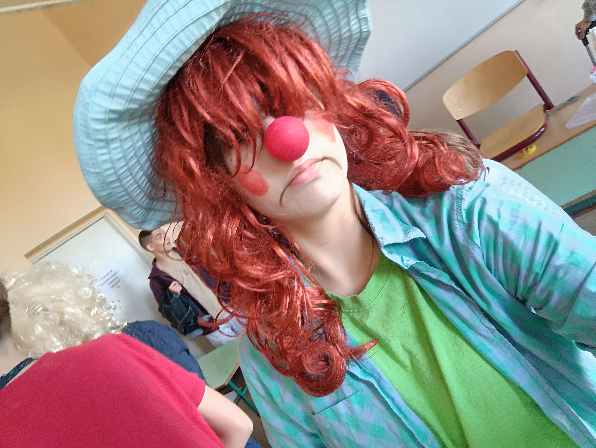
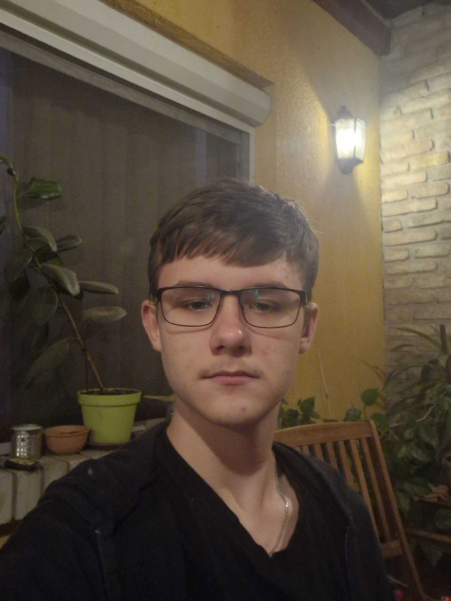
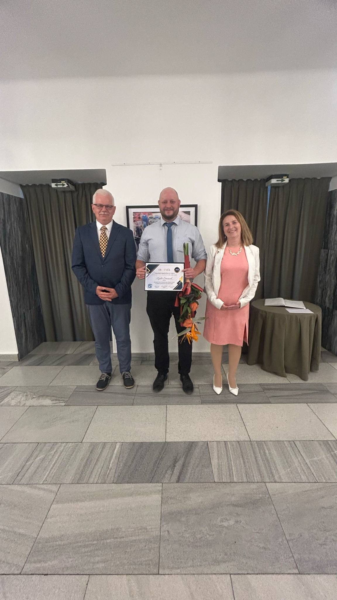
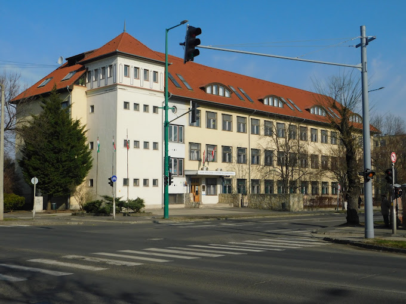

Csapattagok
A bohóckodásnak is vannak határai, amit az első középsulis projektem után meg is ismertem. Ezután a nemes alkalom után komolyan vágok hozzá mindenhez, pontosan követve az utasításokat, sose túllépve a határidőkön. Szeretek zenét hallgatni, nincs egy nap, mikor kihagynám. Zene nélkül mit érek én! 🗣️🔥

Felkészítő tanárok

Az Iskola

Ország 14. legjobb technikuma [proud]